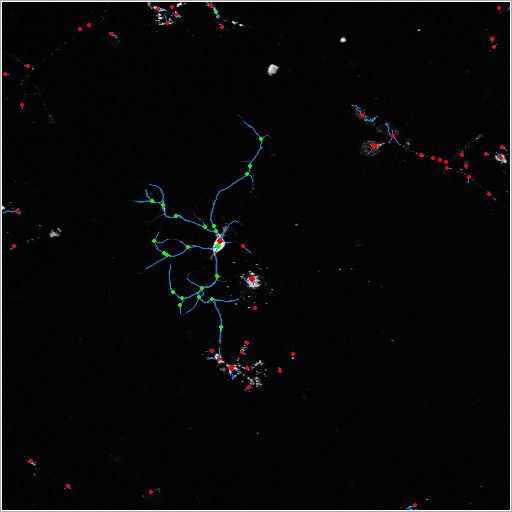

T4trace ("T" for trace) has designed to analyze large-scale neurite micropic images. For flruent analysis, the application hide parameters or manual manipulations rather automated manner. but it is available on general desktop environment. With JRE7 and Equinox framework basis, most Java 1.7 runnable systems are supported.
T4trace has based on Java7, Eclipse RCP (Equinox 3) framework. Most desktop environments that can run java7 also can have T4trace.
Although it is recommended to have plenty memory space. 4GB minimum on 64-bit system, or for 32-bit systems 2GB physical memory space required.
Plus, you'll need recent Java Runtime Environment(JRE) 1.7 or later version.
Once you open the application, you'll see a tree-view of file system. Here you need to select your "workspace" that contains data. On top menu, T4trace > Set workspace... will show you a directory selector dialog. Any directory on the file system can be a workspace, but it is recommended to set the root folder of your data images.
On the file system tree-view, you may find black-green icons. The icon indicates refered file(.tif) is available to run. Double click the icon will bring you the measure, instantly.
If you double click a folder icon, it will open multiple analysis view. Check target images on the right-hand side table, click "Start" button to proceed. That's all
Double click an image icon on the workspace tree view will give you the result in few seconds.
On default, the single view displays visual (canvas) output. However, quantitative data are also provided in form of a table.
Model tab contains items by a model. A model is one neuron reconstruction.
Node tab contains items by a node. A node is one dot(circle) on the canvas.
Single view canvas has several layers that shows you how procedure done. On the right-hand side check list, toggle an item will change the layer's visibility.
Right-click on the canvas, select Current to image... will show you saving file dialog. You can have a snapshot of the canvas by this.
If you select Selection to Images, you'll see directory selector dialog. If you select a folder, it will save "images of selected layers" to the folder.
Right-click on table (Model), select Save current as text will export the data as .txt file.
Make sure single click on the canvas, before proceeding zoom. After canvas getting focused, Ctrl+Arrow UP/DOWN will zoom in/out the canvas.
If you want to restore, put Ctrl+0 (Number 0).
Single analysis settings are provided from progam properties.
On top menu, select T4trace > Preference.... You can select colors, or grid size.
Double click a folder icon on the workspace tree view will show you multi analysis view.
Multi view doesn't filter out the folder contents. Instead, it has interactive filter on the right.
Simply check the items you want will work. But, for sake of simplicity, you can filter the list.
It toggles in-/ex-clude the keyword. Also, it provide (java based) regular expression. If the regex has syntax error, you can noticed by the field color changes into grey.
You can select input color filter, in case for multi-stained image. For monochrome or single stainning, Grey is fine.
The term "Grid size" is (relatively) important in T4trace, since there's not much other parameters.
Grid size means a length of sampling rectangle frame by pixel-length, at initial raw-image sampling phase. As grid size getting bigger, node numbers are getting smaller, therefore the performance will get better.
But you may loose details with larger grid. x2 setting is recommended on relatively smaller (w/h both 512~1,024 px) raw images.
Like single analysis view, you can save table data into text file. (Images will be ignored)
However, you can select a folder to save procedure before starting process.
Check FILEs To: check box will show you folder selector dialog. If you select the folder properly, you may see check mark and the folder name appended. With the setting, click "Start" button will save the results.
"Nodes" table will only provided when you select a folder to save procedural data.